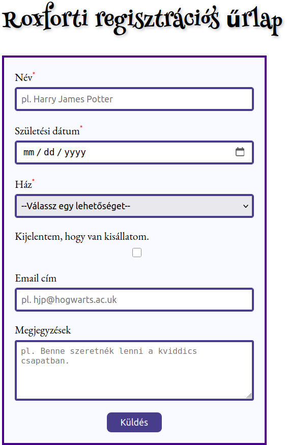
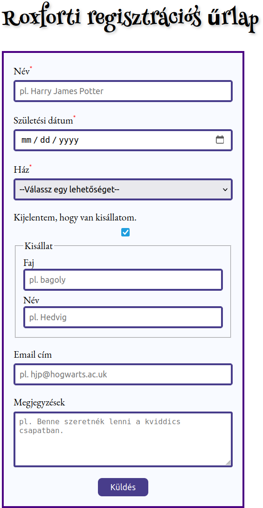

Készíts egy HTML dokumentumot és egy CSS stíluslapot az alábbi roxforti regisztrációs űrlap megjelenítéséhez:


A Küldés gombra való kattintáskor az űrlap adatokat a Webhook.site webhelyre kell küldeni egy
POST kérésben.
A CSS stíluslaphoz szükséges a :has()
pszeudo-osztály, mely csak újabb böngészőkben áll rendelkezésre.
A címsor megjelenítéséhez használd a Henny Penny betűtípust.
Folyószöveg megjelenítéséhez használd az EB Garamond betűtípust.
Módosítsd úgy az űrlapot, hogy a ház kiválasztásakor az oldal háttérszíne változzon a ház elsődleges színére. A házak elsődleges színei innen véve:
Adj hozzá az űrlaphoz egy vezérlőt a varázspálcák számának
megadásához, mely egy nemnegatív egész szám (<input type="number">).
Adj hozzá az űrlaphoz egy vezérlőt egy PNG vagy JPEG formátumú
fotó feltöltéséhez (<input type="file">).
Add hozzá az űrlaphoz a Meg akarod-e látogatni a Mágiaügyi
Minisztériumot? kérdést, melyre az Igen és Nem
válaszlehetőségek közüli választás rádiógombokkal történjen (<input type="radio">).
Alakítsd át az űrlapot úgy, hogy a ház kiválasztása történjen
rádiógombok egy csoportjának segítségével (<input type="radio">).
A válaszlehetőségek egymás alatt jelenjenek meg.
Adj hozzá az űrlaphoz egy jelszó mezőt (<input type="password">).
A pattern attribútum segítségével fejezd ki az alábbi
jelszó követelményeket:
Helyezz el egy jelölőnégyzetet az űrlapon a ház választása elé a
következő címkével: A Teszlek Süvegre bízom a ház választását.
A jelölőnégyzet bekattintásakor kerüljön letiltásra a ház kiválasztására
szolgáló vezérlő. Ehhez JavaScript használata szükséges, lásd a disabled
tulajdonságot.
Adj hozzá az űrlaphoz egy további jelszómezőt a jelszó megismétléséhez. Ahhoz, hogy az űrlap elküldhető legyen, a két jelszónak meg kell egyezni. Ehhez JavaScript használata szükséges.
Ha a születési dátum szerint az életkor 11 év alatti, akkor a Küldés gombra való kattintás eredményezzen hibát a következő üzenettel: Túl fiatal vagy még Roxforthoz, az alsó korhatár 11 év. Ehhez JavaScript használata szükséges.